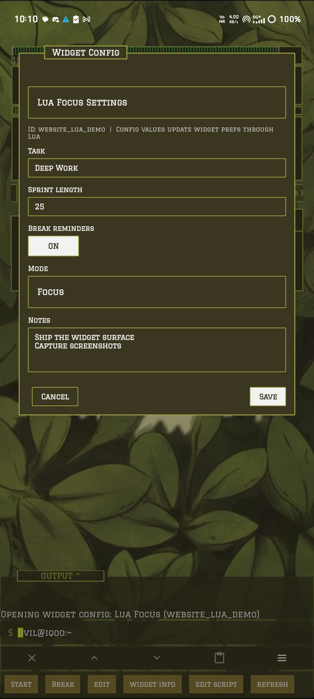

Build small launcher tools without turning the launcher into an IDE.
Widgets are Re:T-UI-owned surfaces for quick, inspectable tools. Lua gives regular users a native scripting layer for timers, todos, notes, status panels, action chips, config forms, and command suggestions without needing Termux plumbing.
Keep preview, config, and source editing separate.
A widget has a live launcher surface, optional config UI, and a script editor path. Those surfaces should stay separate so the launcher remains predictable instead of becoming a tangle of custom mini-apps.
ui:show_text, ui:show_kv, buttons, actions, tables, or progress.ui:show_config. Use it for user-editable values.widget -edit <id> or the edit script chip.

The root widget command should stay quiet.
The widget command is for managing Lua widgets, not for dumping every possible maintenance action into the suggestion row. Common actions should be obvious; advanced recovery commands should still exist but appear once the user narrows the command.
| Command | Use it for | Surface rule |
|---|---|---|
widget -ls |
List saved widgets, ids, metadata, state, and dock registration. | High-intent root chip. |
widget -add <name> |
Create a widget and open the editor with starter Lua. | High-intent root chip. |
widget -show <id> |
Open a widget as the active dock panel. | High-intent root chip. |
widget -config <id> |
Open the widget config form when the script declares one. | High-intent root chip; active widgets expose this as edit. |
widget -edit <id> |
Open the Lua source editor. | High-intent root chip; active widgets expose this as edit script. |
widget -check <id> |
Load and render once, reporting metadata, schema, or runtime errors. | Advanced chip after narrowing, also shown on error surfaces. |
widget -refresh <id> |
Re-render a saved widget. | Usually a widget-specific chip, not root noise. |
widget -rm <id> |
Delete a widget after confirmation. | Advanced chip after narrowing. |
$ widget -add focus_sprint $ widget -check focus_sprint $ widget -show focus_sprint $ widget -config focus_sprint $ widget -edit focus_sprint
Start with a tiny durable script.
A good first widget should render a small body, expose one or two actions, and keep state in prefs. That proves the lifecycle without dragging in networking, files, or complex config.
Create
Run widget -add counter, paste the script, then Save/Run.
Validate
Run widget -check counter before treating it as a daily tool.
Open
Run widget -show counter. Button chips call on_click(index).
Counter widget
-- name = "Counter"
-- type = "widget"
-- retui = "1"
local prefs = require "prefs"
local function render()
if prefs.count == nil then prefs.count = 0 end
ui:set_title("Counter")
ui:show_kv({ count = prefs.count })
ui:show_buttons({"+1", "Reset"})
end
function on_resume()
render()
end
function on_click(index)
if index == 1 then prefs.count = prefs.count + 1 end
if index == 2 then prefs.count = 0 end
render()
end
Lua declares the form; Re:T-UI owns the UI.
Use config for user-editable values such as task names, intervals, units, display preferences, note bodies, todo text, and widget modes. Runtime buttons still belong in the live preview surface.
Declare fields
function on_config()
ui:show_config({
title = "Focus Settings",
fields = {
{ id = "task", label = "Task", type = "text", value = prefs.task, required = true },
{ id = "minutes", label = "Sprint length", type = "number", value = prefs.minutes, min = 1, max = 180 },
{ id = "breaks", label = "Break reminders", type = "toggle", value = prefs.breaks },
{ id = "mode", label = "Mode", type = "select", value = prefs.mode, options = {
{ value = "focus", label = "Focus" },
{ value = "study", label = "Study" },
{ value = "writing", label = "Writing" },
} },
{ id = "notes", label = "Notes", type = "textarea", value = prefs.notes or "", lines = 6 },
}
})
end
Save intentionally
function on_config_submit(action, values)
if action == "save" then
prefs.task = values.task
prefs.minutes = values.minutes
prefs.breaks = values.breaks
prefs.mode = values.mode
prefs.notes = values.notes
end
render()
end
Cancel and back should not mutate widget state. Save mutates only through on_config_submit(action, values), then the widget renders again.
Text
Single-line string input for labels, queries, names, and short values.
Number
Integer or decimal input with optional min and max.
Toggle
Boolean on/off state submitted as a Lua boolean.
Select
One string value from a declared option list.
Textarea
Multiline string input. Newlines are preserved.
Scroll
The panel grows toward the top margin and scrolls fields when there are many of them.
Habit tracking stays removable.
The habit tracker is a Lua widget example, not a built-in module. It uses the generic config form, notification reminder API, and glyph progress renderer, then opens through widget -show habit_tracker like any other user script.
docs/examples/habit_tracker.lua.widget -add habit_tracker, paste the script, save, approve notifications, then widget -show habit_tracker.edit chip or widget -config habit_tracker.Habit line format
Meditate | daily | 08:30 Walk | daily | 18:00 Read docs | once | 2026-05-24 21:00
Use prefs for settings, files for user content.
Widgets live under Re:T-UI's local widgets/<id>/ folder and are included in personal backup/restore. Keep small settings in prefs. Put larger notes, logs, JSON blobs, and user-generated text in widget-local files.
Notes widget storage
local prefs = require "prefs"
local files = require "files"
function save_notes(text)
prefs.last_saved = os.time()
files:write("notes.txt", text)
end
function load_notes()
if files:exists("notes.txt") then
return files:read("notes.txt")
end
return ""
end
Not every Lua script needs to become a dock widget.
Lua suggestion scripts use -- type = "suggest". They are installed like widgets, but they do not render into the dock. They add command chips while the user types at the root prompt.
Suggestion script
-- name = "Quick Config"
-- type = "suggest"
-- retui = "1"
local strings = require "strings"
local fmt = require "fmt"
function on_suggest(query)
local q = strings.trim(fmt.lower(query))
if strings.starts_with(q, "cfg") then
suggest:command("Open settings", "settings")
suggest:command("Edit behavior", "config -file behavior.xml")
suggest:command("Theme colors", "settings appearance theme")
end
end
Use this when
Use the smallest API surface that solves the widget.
Lifecycle
on_load, on_resume, on_click(index), on_action(value), on_dialog_action(index), on_tick(n), on_alarm, on_config, on_config_submit.
Render
ui:set_title, ui:show_text, ui:show_lines, ui:show_kv, ui:show_table, ui:show_buttons, ui:show_action, ui:show_command.
Panels
ui:set_expandable, ui:is_expanded, ui:expand, ui:collapse, ui:toggle, ui:show_progress_bar(label, current, max, width), ui:set_progress.
Storage
prefs for small persistent values. files for widget-local text files. json for encoding and decoding structured data.
Helpers
date, fmt including bounded Unicode progress_bar(value, max, width), clock for timer, stopwatch, and Pomodoro state, strings, colors, debug, system, and aio cover common launcher-safe work.
Reminders
reminders:daily(id, title, "HH:MM"), reminders:once(id, title, "yyyy-mm-dd HH:MM"), reminders:cancel(id), and reminders:cancel_prefix(prefix) schedule local notifications and require declared permission.
Network
http:get, http:post, http:put, and http:delete return through network callbacks and require declared permission.
Lua is launcher-native, not a general shell escape.
The runtime uses a Re:T-UI-owned Lua environment. Scripts can use safe Lua basics plus the widget APIs, not arbitrary Java, shell execution, package loading, or global filesystem access. Shell automation belongs in Termux modules.
| Permission | What it allows | Notes |
|---|---|---|
network |
HTTP requests through the Lua http helper. |
Responses are size-limited to protect launcher memory. |
clipboard |
Read or write clipboard helpers exposed by Re:T-UI. | Use only when the widget clearly needs clipboard behavior. |
vibrate |
Trigger launcher vibration feedback. | Keep it sparse; widgets should not become noisy. |
local-files |
Use widget-local files through files. |
No global filesystem access. |
active-tick |
Run on_tick(n) while the widget is the active open module. |
Intervals are clamped; use this for visible live state only. |
notifications |
Schedule local notifications through the Lua reminders helper. |
Use stable ids so widgets can replace or cancel their own reminders. |
-- permissions = "network,clipboard,local-files,active-tick,vibrate,notifications" -- retui = "1"
Reality check: widgets should stay small. If a script needs background daemons, Linux CLIs, Android shell access, or heavy parsing, build a Termux-backed module and let the widget surface remain light.